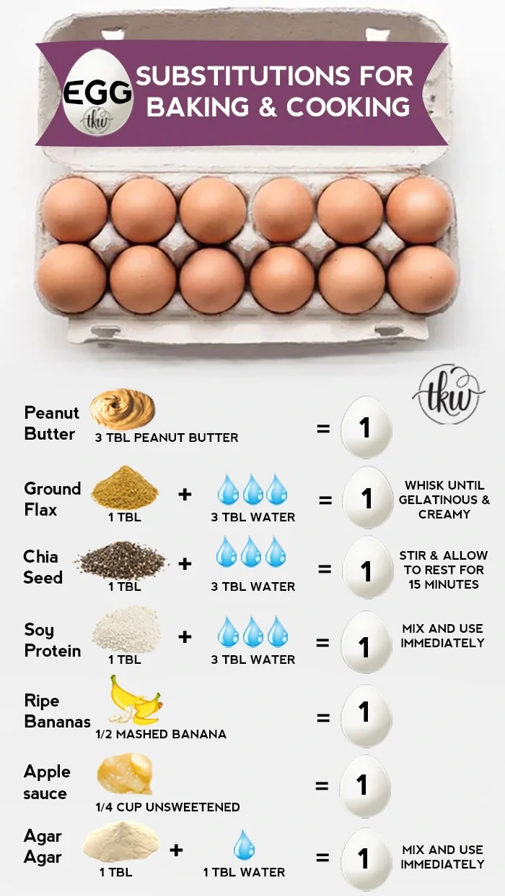

Egg Substitutions

Image: The Kitchen Whisperer
Image: The Kitchen Whisperer
There are many substitutes for eggs in cooking and baking. Which one to use depends on what you are making.
This article does a great job explaining when to use each of the substitutes listed below: 13 Effective Substitutes for Eggs.
- Applesauce
- Mashed banana
- Ground flaxseeds or chia seeds
- Commercial egg replacer (not usable in phase 1; be sure to check the ingredients!)
- Silken tofu (discuss using this with Dr. Shannon)
- Vinegar and baking soda
- Yogurt or buttermilk (not usable in phase 1)
- Arrowroot powder (this is high in starch and can spike blood sugar)
- Aquafaba (liquid in canned chickpeas)
- Nut butter
- Carbonated water
- Agar-Agar or gelatin
- Soy Lecithin (only use if you can have soy)